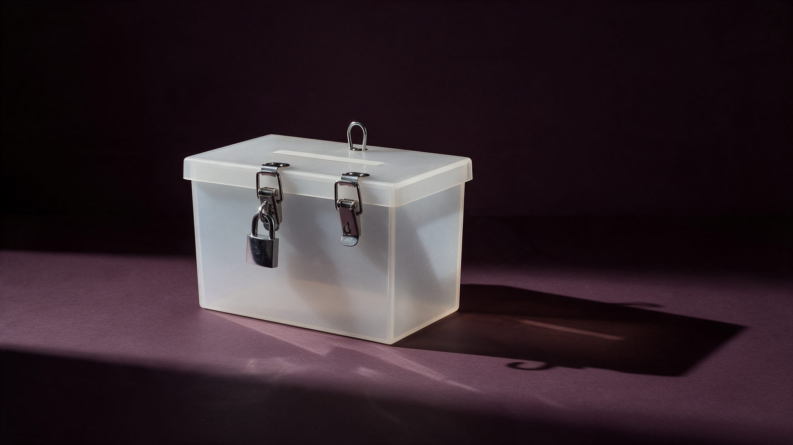

La amenaza que sí tiene nombre
La Suprema Corte revisó la reforma electoral de Chihuahua el 29 de septiembre de 2026. La gobernadora dice que le quitó al narco lo que más le duele; Morena, que solo defendió la presunción de inocencia. Los dos cuentan la mitad: la causal para anular una elección por crimen organizado sobrevivió por unanimidad, con la presunción de que gana el beneficiado, y lo que cayó fue la responsabilidad por beneficio ajeno y la cancelación automática de candidaturas. El subtexto está en el cuarto pronunciamiento: la Corte ordenó a Chihuahua escribir la causal que la Constitución federal agregó cinco semanas después de la acusación de Nueva York contra el gobernador de Sinaloa, la injerencia extranjera. Con Tilly: el Estado nombra la amenaza contra la que vende protección.

El 29 de septiembre de 2026 el Pleno de la Suprema Corte resolvió las acciones de inconstitucionalidad 96/2026 y acumuladas contra la reforma electoral de Chihuahua. La gobernadora María Eugenia Campos escribió esa tarde que la Corte le quitó al narco "lo que más le duele". Morena, que promovió una de las 4 acciones, sostuvo que la reforma castigaba sin conducta probada y violaba la presunción de inocencia. Las dos versiones son ciertas a medias, y la mitad que falta es la que importa.
Chihuahua escribió 3 cosas en su Ley Electoral el 30 de junio. La primera, una causal de nulidad: una elección se anula cuando se acreditan "hechos o actos de delincuencia permanentes o sistemáticos" que, mediante violencia, amenazas o financiamiento, incidan en el proceso. La segunda, una infracción: el candidato que resulte "beneficiado de manera directa" por esos actos es responsable, aunque nadie pruebe que hizo algo. La tercera, una sanción: quien incurra en esa infracción pierde el registro de manera automática.
La Corte dejó en pie la primera, por unanimidad de los 7 ministros presentes. Leída junto con el artículo 385 de la misma ley, la causal exige que la violación sea grave, dolosa y determinante, y con esa lectura la declaró válida. Sobrevivió además un detalle que ningún comunicado mencionó: el propio artículo 385 establece que, en esta causal, la violación se presume determinante "siempre que resulte electa la persona beneficiaria de dichos actos". Morena lo impugnó, la Corte no lo tocó y los resolutivos no lo incluyen entre lo invalidado.
Lo que cayó fue la segunda y la tercera pieza. La responsabilidad por "beneficio directo" se invalidó por unanimidad, con un argumento que la Corte había fijado un año antes: la responsabilidad punitiva exige una conducta atribuible a la persona, y el beneficio es un resultado, no una conducta. Una candidatura puede ser favorecida por un tercero "sin conocerla, solicitarla, aceptarla o intervenir de cualquier forma en su realización", dice el proyecto, y sancionarla por eso es responsabilidad objetiva. La pérdida automática del registro cayó por 6 votos contra 1: una sanción fija que impide graduar el caso viola el artículo 22 constitucional. La sanción no desapareció; sigue en el catálogo del artículo 268, solo que ahora la autoridad debe individualizarla. Yasmín Esquivel votó por conservar el automatismo y anunció voto particular: cancelar un registro, dijo, "no admite modulación".
Hasta aquí la sentencia es de manual. El precedente que la sostiene, la acción de inconstitucionalidad 157/2024, lo votaron los 9 ministros de esta misma integración el 13 de octubre de 2025. Morena tenía razón en el punto técnico. Chihuahua diseñó mal la infracción y además llegó tarde: la reforma federal de junio dio a los congresos locales hasta el 5 de junio para armonizar, y el decreto de Chihuahua se publicó el 30.
El subtexto está en el cuarto pronunciamiento, el que casi nadie leyó. La Corte declaró fundada una omisión legislativa: el Congreso de Chihuahua no incorporó a su régimen de nulidades la causal que la Constitución federal agregó el 2 de junio de 2026, "actos de intervención o injerencia extranjera que influyan en los resultados electorales", y lo vinculó a legislarla.
La Constitución acaba de decir cuál es la amenaza que el Estado quiere nombrar. Tiene pasaporte. La que tiene plaza sigue sin nombre federal.
Las fechas, en fila. El 29 de abril de 2026, una acusación del Distrito Sur de Nueva York sostuvo que el gobernador de Sinaloa fue electo en 2021 "con el apoyo de los Chapitos", que robaron papeletas e intimidaron a candidatos opositores. El 29 de mayo, el Senado aprobó por 85 votos contra 42 la causal de nulidad por injerencia extranjera; el senador Luis Donaldo Colosio dijo en tribuna que la amenaza real para las elecciones era el crimen organizado, no un gobierno extranjero. El 2 de junio se publicó en el Diario Oficial con 3 días de plazo para armonizar. El 22 de junio, el Congreso de Chihuahua votó un dictamen de reforma constitucional que juntaba las dos causales, crimen organizado e injerencia extranjera: 20 votos a favor, 12 en contra y una abstención, 2 menos de los 22 que exige la Constitución local. Morena votó en contra y argumentó que las dos causas se dictaminaron juntas a propósito. El 30 de junio se publicó la reforma legal, con la causal de delincuencia y sin la extranjera. El 29 de septiembre la Corte conservó la primera y ordenó escribir la segunda.
El resultado es un mapa de amenazas con una sola entrada nueva. La Constitución federal enlista hoy 4 causales de nulidad: exceso de gasto, compra de cobertura en radio y televisión, recursos ilícitos e injerencia extranjera. El crimen organizado no aparece por su nombre; cada estado decide si lo escribe, y la Corte acaba de confirmar que puede hacerlo. Chihuahua lo escribió y omitió la otra. El tribunal constitucional le enmendó la omisión que coincide con la prioridad de la Federación.
Este texto no afirma coordinación entre la acusación de Nueva York, la reforma del Senado y el litigio de Morena en Chihuahua; registra el orden en que ocurrieron. La pregunta queda abierta: ¿por qué una amenaza cupo en la Constitución en 5 semanas y la otra sigue esperando en las leyes estatales?
El sociólogo Charles Tilly escribió en 1985 una forma de plantearla: el Estado se parece a una banda que vende protección, porque cobra por defender a la población de una amenaza que él mismo define, y "los gobiernos con frecuencia simulan, estimulan o incluso fabrican amenazas de guerra externa". Quien produce el peligro y, a un precio, el escudo contra él, "es un extorsionador", sigue el mismo autor. A mi juicio, la Constitución mexicana acaba de decir cuál es la amenaza que el Estado quiere nombrar. Tiene pasaporte. La que tiene plaza sigue sin nombre federal.
Dos hechos pesan en sentido contrario. El Tribunal Electoral nunca ha anulado una elección por crimen organizado, ni cuando lo tuvo acreditado: en Michoacán 2021 reconoció la intervención en 4 municipios y la calificó de focalizada; en Tamaulipas 2022 no encontró prueba. La pared real no es esta Corte sino el estándar de determinancia, y la causal chihuahuense sobrevive con ese mismo estándar encima.
Queda el calendario. El proceso electoral de Chihuahua inició el 1 de octubre de 2026, 2 días después de la sentencia, y la jornada será el 6 de junio de 2027. Con el proceso en curso no puede haber modificaciones legales fundamentales. Chihuahua elegirá gobernador con la causal contra el narco viva y sin la causal de injerencia extranjera; la que la Corte ordenó escribir se aplicará en el siguiente proceso. La ley nombró una amenaza y el tribunal le exigió nombrar la otra. Ninguna de las dos llegará a la boleta de 2027 con el peso que sus autores querían.
- SCJN, acción de inconstitucionalidad 96/2026 y acumuladas 97/2026, 99/2026 y 103/2026, proyecto de sentencia (ponente Sara Irene Herrerías Guerra), resuelta el 29 de septiembre de 2026; Tema IX (pp. 294-331), Tema III.2 (pp. 175-185) y resolutivos (pp. 368-371): www2.scjn.gob.mx/Juridica/Engroses/Cerrados/Publico/Proyecto/2026/09/AI96_2026.pdf
- SCJN, versión taquigráfica preliminar de la sesión pública del Pleno del 29 de septiembre de 2026, con las votaciones por tema y la intervención de la ministra Yasmín Esquivel Mossa: scjn.gob.mx/sites/default/files/versiones-taquigraficas/documento/2026-09-29/Versi%C3%B3n%20preliminar%2029092026%20-1.pdf
- Ley Electoral del Estado de Chihuahua, última reforma publicada en el Periódico Oficial del Estado el 30 de junio de 2026, artículos 93, 257, 259, 260, 268, 384 y 385: congresochihuahua2.gob.mx/biblioteca/leyes/archivosLeyes/1173.pdf
- Constitución Política de los Estados Unidos Mexicanos, artículo 41, base VI, párrafo tercero, incisos a) a d), y artículo 105, fracción II, penúltimo párrafo; decreto de adición del inciso d) publicado en el Diario Oficial de la Federación el 2 de junio de 2026, transitorio segundo: diputados.gob.mx/LeyesBiblio/pdf/CPEUM.pdf
- SCJN, acción de inconstitucionalidad 157/2024, resuelta el 13 de octubre de 2025 por unanimidad de nueve votos, citada en el proyecto de la AI 96/2026, párrafos 591 a 593 y nota 160.
- Departamento de Justicia de Estados Unidos, Distrito Sur de Nueva York, acusación de reemplazo S9 23 Cr. 180 (KPF) contra Rubén Rocha Moya y otros, traducción certificada, párrafos 5, 7 y 31: justice.gov/usao-sdny/media/1438611/dl
- Infobae, "De denuncias en Sinaloa a una acusación de EEUU: cronología de los señalamientos contra Rocha Moya", 30 de abril de 2026: infobae.com/mexico/2026/04/30/de-denuncias-en-sinaloa-a-una-acusacion-de-eeuu-cronologia-de-los-senalamientos-contra-rocha-moya-por-presuntos-nexos-con-el-narco
- El Universal, "Avala Senado reforma constitucional contra injerencia extranjera en elecciones; turnan a congresos estatales", 29 de mayo de 2026: eluniversal.com.mx/nacion/avala-senado-reforma-constitucional-contra-injerencia-extranjera-en-elecciones-turnan-a-congresos-estatales
- El Diario de Chihuahua, "Rechaza Congreso nulidad de elección por injerencia extranjera y del crimen", 22 de junio de 2026: eldiariodechihuahua.mx/local/2026/jun/22/rechaza-congreso-nulidad-de-eleccion-por-injerencia-extranjera-y-del-crimen-810480.html
- Congreso del Estado de Chihuahua, boletín "Olson critica a Morena por frenar reforma contra la intervención del crimen organizado en elecciones", 22 de junio de 2026: congresochihuahua.gob.mx/detalleNota.php?id=13578
- Gobierno del Estado de Chihuahua, boletín "Morena litigó y la Corte le concedió que el candidato que gane con el narco se quede con la candidatura", 29 de septiembre de 2026: chihuahua.gob.mx/prensa/morena-litigo-y-la-corte-le-concedio-que-el-candidato-que-gane-con-el-narco-se-quede-con-0
- El Financiero, "'Morena litigó y la Corte le concedió que el candidato que gane con el narco se quede con la candidatura': Maru Campos", 29 de septiembre de 2026: elfinanciero.com.mx/estados/2026/09/29/morena-litigo-y-la-corte-le-concedio-que-el-candidato-que-gane-con-el-narco-se-quede-con-la-candidatura-maru-campos
- El Diario de Chihuahua, "Autoriza IEE calendario del Proceso Electoral 2026-2027", 29 de septiembre de 2026: eldiariodechihuahua.mx/estado/2026/sep/29/autoriza-iee-calendario-del-proceso-electoral-2026-2027-842397.html
- Tribunal Electoral del Poder Judicial de la Federación, Arturo Espinosa Silis, "Violencia en las elecciones. El caso de Michoacán" (sobre la sentencia SUP-JRC-166/2021), en Justicia electoral en movimiento, TEPJF, 2024: te.gob.mx/editorial_service/media/pdf/271220241258487624.pdf
- Milenio, "TEPJF valida triunfo de Américo Villarreal en Tamaulipas", 28 de septiembre de 2022: milenio.com/politica/americo-villarreal-sala-superior-valida-eleccion-tamaulipas
- Charles Tilly, "War Making and State Making as Organized Crime", en Peter Evans, Dietrich Rueschemeyer y Theda Skocpol (eds.), Bringing the State Back In, Cambridge University Press, 1985, pp. 169-191, ISBN 978-0521313131. Texto consultable: theanarchistlibrary.org/library/charles-tilly-war-making-and-state-making-as-organized-crime
Las ligas van a la vista para que cualquiera compruebe por su cuenta. Si alguna dejó de resolver, escríbenos y la reponemos.
SRVO